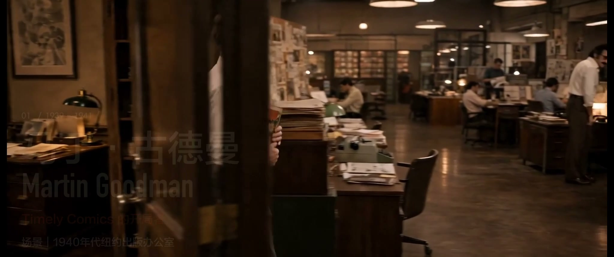
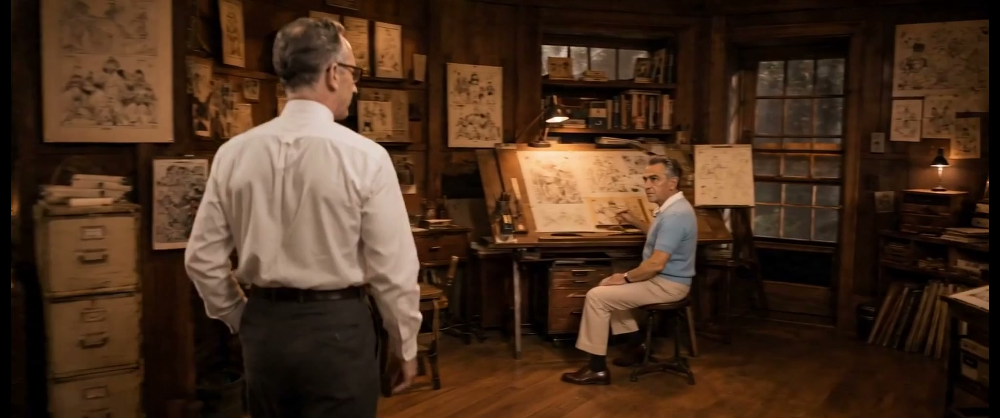
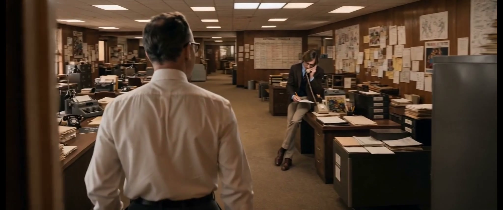
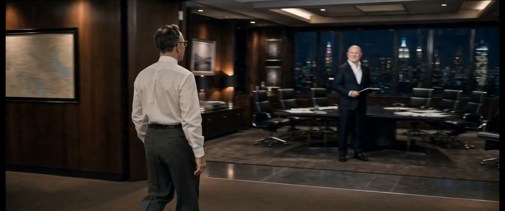
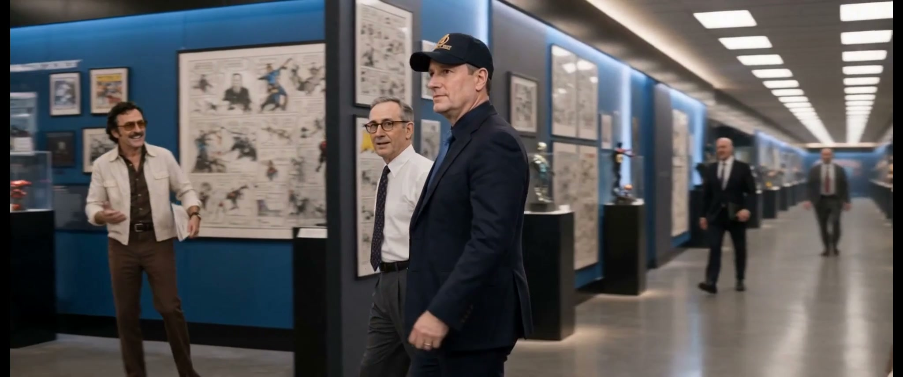
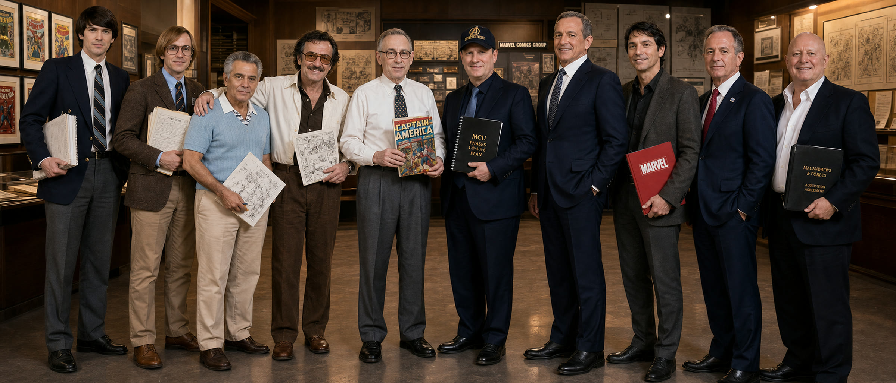

1939-1941
马丁·古德曼 Martin Goodman
Timely Comics 的开局者。把杂志式出版生意推进漫画市场，用商业直觉打开第一扇门。
锁点：纽约出版办公室、细框眼镜、验稿与翻页动作。AI Film Project / Janet Motion
从马丁·古德曼到凯文·费奇，80 年传奇历程里，十个改变世界的转向者。
我本人一直很喜欢漫威系列作品。最开始只是无意间冒出一个念头：如果不用英雄做主角，而把镜头交给背后真正改变这家公司命运的人，会不会更有意思？
后来 Back in Black 进来，整个项目的气口一下就对了。那种鼓点不是“热闹”，是把一件已经快冷掉的事重新点燃。它让这支片，也让当时的生活，重新有了向前冲的劲。
这不是英雄排名，而是一条公司命运的接力线。每个人都在一个关键时间点，把漫威推向下一种形态。
1939-1941
Timely Comics 的开局者。把杂志式出版生意推进漫画市场，用商业直觉打开第一扇门。
锁点：纽约出版办公室、细框眼镜、验稿与翻页动作。1961-1968
现代漫威的声音。让 Marvel 不只是角色库，而是会和读者说话的品牌人格。
锁点：Bullpen 编辑部、读者来信、开领衬衫与小胡子。1961-1968
现代漫威的世界建构者。把宇宙、怪物、机械、神话和角色压进同一张画稿。
锁点：蓝色针织短袖、画桌、Bristol 画板与前倾创作姿态。1972-1974
第一位正式接班人。把第一代创作奇迹续成可继承、可管理的宇宙。
锁点：青年编辑感、排期稿、continuity 与承接动作。1978-1987
工业化的编辑总监。把几十条连载线拧成一台能持续运行的内容机器。
锁点：201 cm 高差、正式西装、排期板与会议室纪律感。1989-1996
资本扩张者。看见 IP 价值，也把漫威推向债务危机的金融回旋。
锁点：深色西装、财务报表、收购清单与过度自信的商业笑。1998-2005
重组与压成本的人。让濒临破产的漫威回到角色 IP、玩具与授权轨道。
锁点：Toy Biz 仓库、授权清单、收束姿态与低调高管气质。2003-2009
自主制片融资的设计者。把“卖角色版权”改成“自己融资，自己拍”。
锁点：10 Films / 525M / Character Rights、红色文件夹与融资桌面。2009
全球化的整合者。把漫威接入迪士尼的发行、乐园、消费品与媒体网络。
锁点：玻璃会议空间、全球地图、推门动作与平台级整合感。2018-2019
当代叙事总控。把电影、角色和阶段计划组织成 MCU 的长线叙事系统。
锁点：Infinity War 帽子、规划板、首映现场与未来时间线。




部分人物可用照片并不在高光期，不能直接照搬。先锁脸，再回推到其真正掌权的年龄、发型、服装和状态。
Jim Shooter 与 Jack Kirby 的高差接近 43 cm；Kevin Feige 要略低于 Bob Iger、略高于 Stan Lee。同框比例比单人像更难。
1940 年代窄领带、1960 年代开领衬衫、1970 年代针织背心、1990 年代金融西装，都要让时间自己说话。
出版办公室、Marvel Bullpen、编辑会议室、Toy Biz 仓库、融资白板和首映走廊，每个空间代表一次行业转向。
马丁不是站在合影里，他是镜头锚点。人物之间通过递稿、翻页、握手、推门和共同按住封面完成传承。
开头从早期出版的纸张进入，结尾落在 MCU 的未来规划。首尾必须互相照应，短片才不是人物资料串烧。
字幕水印完整版，已转为适合网页播放的 MP4。
每张设定板都对应一个角色的脸部锁点、服装、场景、道具和不可错点。公开页面只展示制作逻辑，不暴露未采用的测试废片。

Final Frame
这支片最想留下的不是“谁最伟大”，而是：每个时代都有一个人，先看见别人还没看见的东西，然后把漫威推到下一个房间。